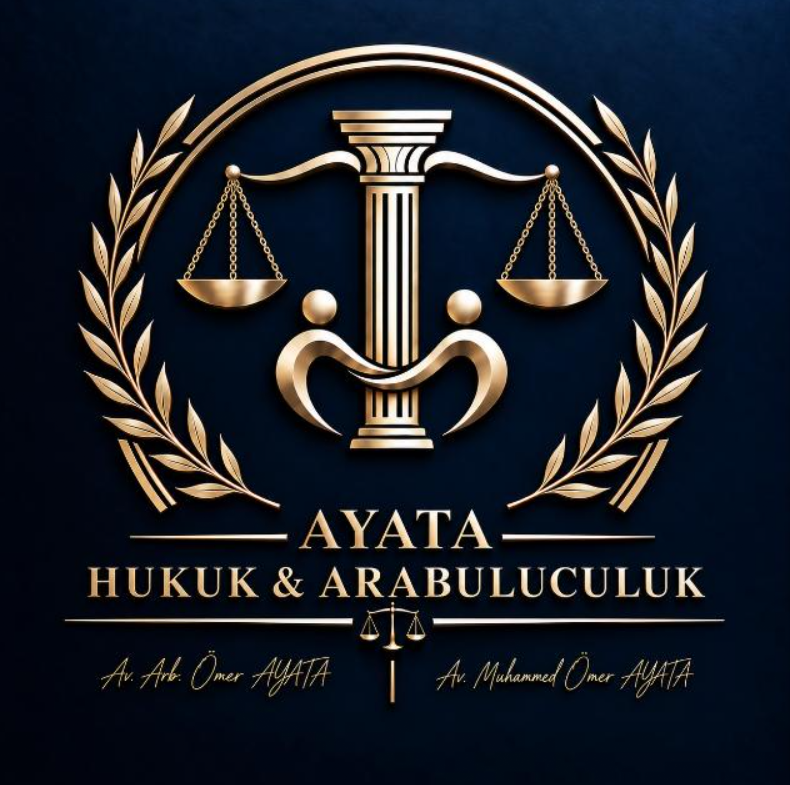
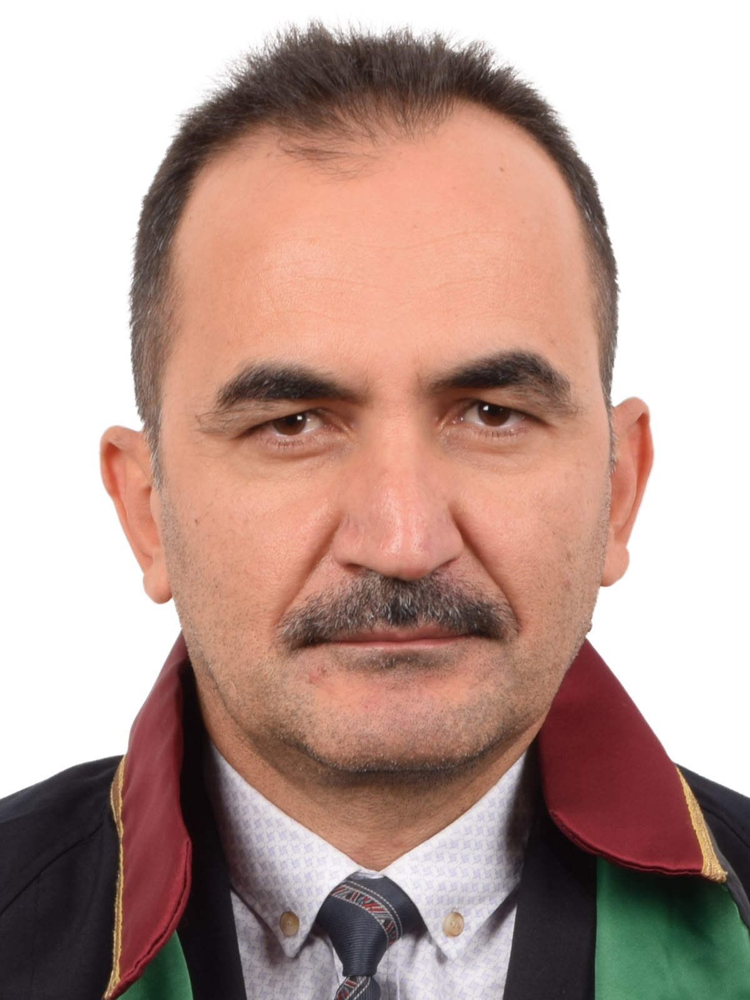
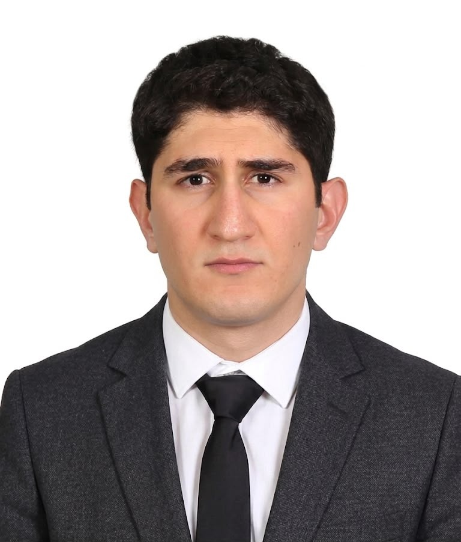

×


AYATA HUKUKÖzgeçmiş ve detaylı bilgileri görüntülemek için avukatlarımızın fotoğraflarına tıklayabilirsiniz.

Avukat & Uzman Arabulucu
Hukuki uyuşmazlıkların alternatif çözüm yolları olan arabuluculuk süreçlerinin yönetimi ile ceza hukuku, aile hukuku ve özel hukuk davalarında kapsamlı müvekkil temsili sunmaktadır.

Avukat
Ticaret hukuku, iş ve sosyal güvenlik hukuku, icra iflas takipleri ile sözleşmeler hukuku alanlarında etkin dava takibi ve önleyici hukuk danışmanlığı yürütmektedir.